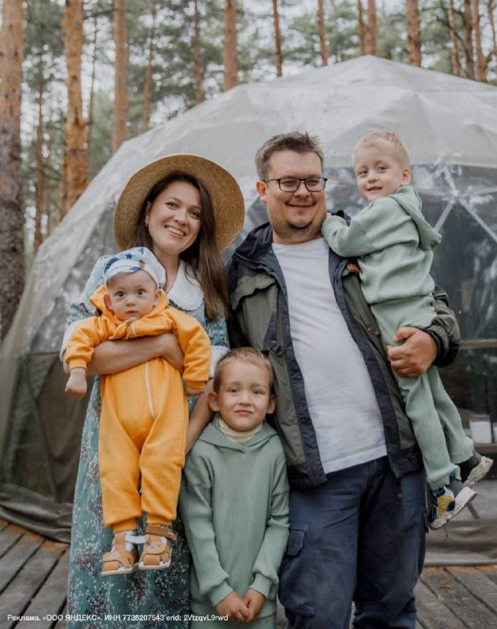

Ребята, я сегодня хочу поговорить о теме, которая затрагивает многих из нас, особенно тех, кто сталкивается с трудностями, связанными с развитием детей.
У моих мальчиков была очень непростая история рождения, я бы сказала - трудная. И если Женька и Пашка родились на 35 и 36 неделе, то Мишка появился на свет совсем крошечным — всего 1260 граммов на 30-й неделе беременности. Мы прошли через столько испытаний! Столько курсов реабилитации, обследований и ожиданий... Было страшно думать о возможных последствиях преждевременных родов, особенно учитывая риски развития детского церебрального паралича (ДЦП). Несмотря ни на что, нам чудом повезло избежать страшного диагноза, хотя я прекрасно осознаю, насколько сложно бывает поставить раннюю диагностику этого состояния.
Недавно прочитала новость, которая поразила меня своей человечностью и технологичностью одновременно: студенты Школы анализа данных Яндекса (место, откуда выпускаются умнейшие аналитики данных и специалисты по искусственному интеллекту). разработали уникальную нейросеть, способную обрабатывать снимки МРТ головного мозга младенцев возрастом до одного года. Система с высокой точностью (более 90%) помогает врачам определить объемы серого и белого веществ в головном мозге малыша - то есть, помогает в диагностике, на которую раньше требовалось несколько часов, а то и дней. А теперь весь процесс занимает пару минут. Для врачей это настоящая находка!
Дело в том, что ранняя диагностика заболеваний ЦНС критически важна. Чем быстрее поставлен верный диагноз, тем больше шансов подобрать эффективное лечение и предотвратить осложнения. Представляете, какая огромная помощь врачам и родителям?
Нейросеть уже прошла тестирование в одном из лучших медицинских вузов нашей страны — Петербургском государственном педиатрическом медицинском университете и теперь доступна врачам в России, а скоро станет доступна и по всему миру.
Каждый раз, читая такие новости, испытываю гордость за наших ребят, которые смогли такое сделать, и искренне надеюсь, что искусственный интеллект будет приносить нам пользу и что мы сможем применять его правильно и с заботой о людях.